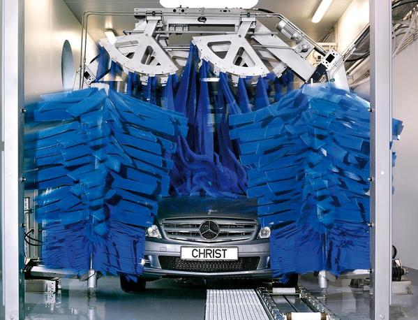

Туннельная
В отличие от портальной, в туннельной мойке автомобиль позиционируется и закрепляется на конвеере, который последовательно продвигает его через функциональные порталы, щеточные станции, арки, служащие для выполнения тех или иных функций (нанесения растворов химических веществ, опрыскивания, ополаскивания, мойки щетками), станцию полировки кузова и агрегатов сушки.
Главным преимуществом туннельных моек является то, что они позволяют провести весь комплекс услуг по мойке и полировке автомобиля всего за 3-4 минуты.
Благодаря своим конструкционным особенностям туннельная мойка превосходит портальную по количеству опций. Например, она позволяет реализовать не один, а несколько вариантов чистки колес и порогов. Имеется возможность установить различные щеточные станции с числом щеток от 3 до 7, расположить сразу несколько воздушных сушек различной конструкции, ввести щеточные и полотенчатые сушители, организовать два варианта полировки кузова.
Несомненно, главным и неоспоримым преимуществом автоматических моек является их способность быстро очистить от грязи кузов автомобиля. В то же время в процессе автоматической мойки не всегда удается качественно удалить грязь из щелей автомобильного кузова, с поверхности различных элементов декора, тюнинга, а также справиться с трудновыводимыми пятнами на лакокрасочном покрытии. Устранение подобных пробелов автомоек входит в обязанности оператора. Квалифицированный оператор должен самостоятельно определить проблемные места каждого автомобиля, куда не сможет проникнуть ворс щеток, и промыть их вручную.

Но в целом невысокие трудозатраты персонала и высокая пропускная способность автоматических моек благоприятно сказываются на стоимости всей услуги в целом. С учетом почти всегда качественного результата становится понятно, почему семь из десяти европейских автовладельцев регулярно делают свой выбор в пользу автомоек.
Мы же, в свою очередь, пока такой статистикой похвастаться не можем. Во-первых, это объясняется сравнительно небольшим числом таких моек в нашей стране, а во-вторых, многие отечественных автовладельцы уверены в том, что щетки автомоек обязательно исцарапают или затрут лакокрасочный слой автомобиля. Попробуем разобраться, насколько справедливо подобное утверждение.
Также рекомендуем
Наномойка Антидождь Инновационный автошампунь Полировка «Жидкое стекло»